My Online Childhood
I've always loved the Internet, and have been very much 'chronicially online' (but, like, in a cool way) since I was a kid. I thought it would be fun to share my nostalgia with you here!
Oh, and as a reference point: I was born in 1999, and these memories span the late 2000s and early 2010s.
When you see the logo of the Wayback Machine ( ) you can click on it to see an archived version of what the website looked like at some point in the past! Everybody say "Thank you Internet Archive!"
German Beginnings
My native language is German, so obviously my earliest Internet memories were made on German sites.
Ravensburger Kinderwelt (Ravenburger's World for Children)
Ravensburger is one of the largest board game brands in my country, and a long, long time ago they had an online game called the "Ravensburger World for/of Children" (excuse my bad attempt at translating "Kinderwelt"). The game is probably the first game I played on the Internet, as I remember I was so young that I had to enter my mom's email address. My sister and I played the game a lot.
{kind=link}
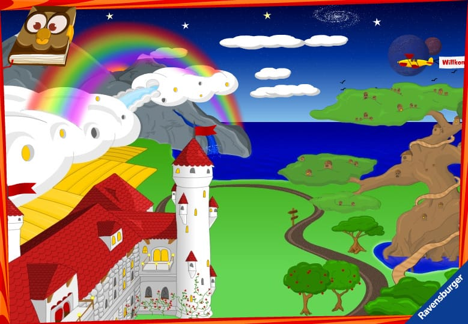
Basically, you could choose a species to play (human, fairy, elf, etc.), a location to live in (there was a cloud town, a fairy forest, a space station, and a castle - I lived in the castle) and then make friends, decorate your room with furniture (all Ravensburger-branded of course - the whole game was just a huge ad for their board games, puzzles, etc.), buy clothes, chat, and of course play games.
{kind=link}
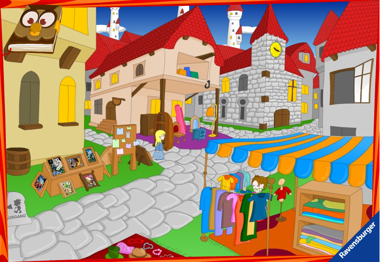
The weird thing about the Ravensburger Kinderwelt is that there is almost no evidence of the game ever existing on the Internet today. It is impossible to find anything about it because there is a real-life playground with the same name. Other than that, there's really just people saying "Remember this game?". Many years ago I wanted to find some screenshots and somehow finally found a few, which have since been deleted, so I'm really glad I had downloaded them. These days, when you look for information on it, you'll most likely just stumble upon me talking about it, and the shrine I made for it on this very website! (The shrine is in German, but feel free to check it out anyway!)
{kind=link}
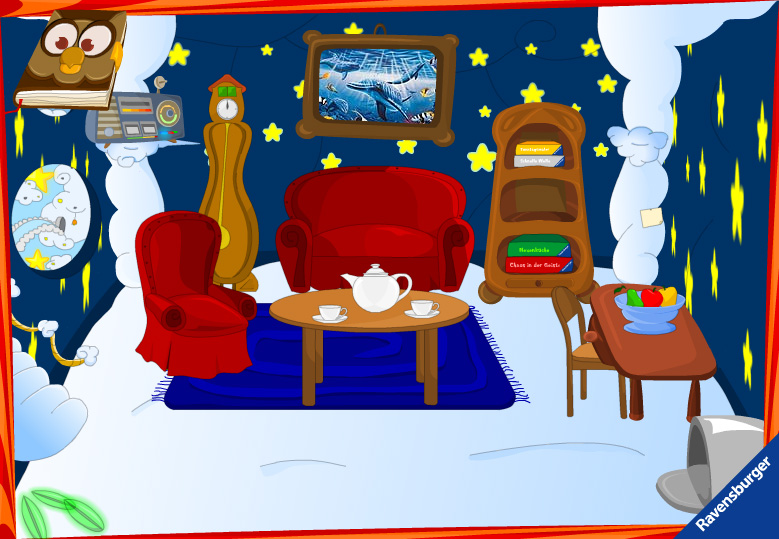
I have a lot of great memories from the game, and the fact that it's almost a lost media makes it even more fun to talk about it.
Spieletipps.de (Game Tips)
Obviously, being the age that I am, I played a lot of Nintendo DS games as a kid, and there was one website that popped up whenever you looked for video game tips, guides, walkthroughs, screenshots, cheats, etc.: Spieletipps (translates to Game Tips).
Spieletipps still existed until October 2023, when it was deactivated without prior warning. I hadn't used it anymore at that point (I use more specific websites now, such as the wikis for games I play, or maybe a subreddit), but I'm still sad to see it go. Thankfully, the Wayback Machine has it archived:
{kind=link}
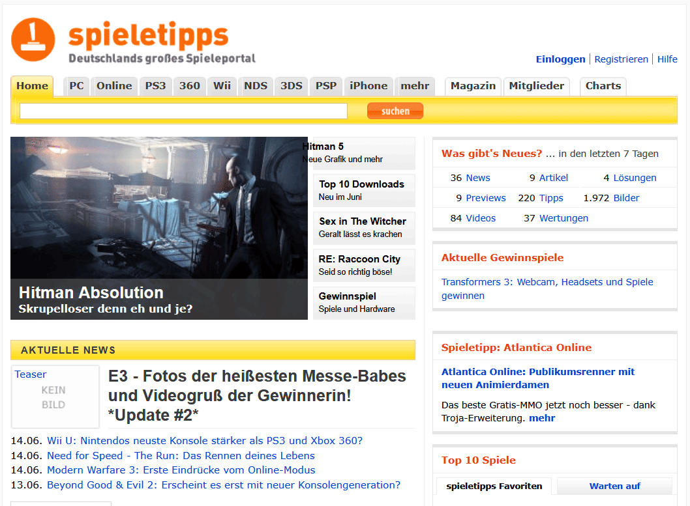
Panfu
Remember Club Penguin? Yeah, Panfu was my Club Penguin. Except it was pandas, not penguins.
I don't have much to say about it except that it was very much like Club Penguin (which I also played, but less so). The minigames were really fun, and the houses were treehouses, which I thought was cool as a child. But I never had any of the cool outfits, pets or furniture because I never spent real money on it.
{kind=link}
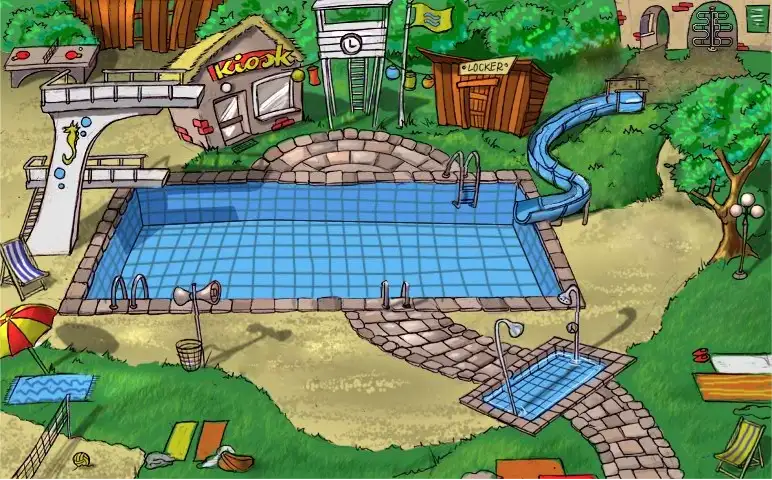
My favorite minigame was a game similar to Doodle Jump, in which you had to let your panda jump on clouds.
Panfu still exists! (Even in English)
{kind=link}
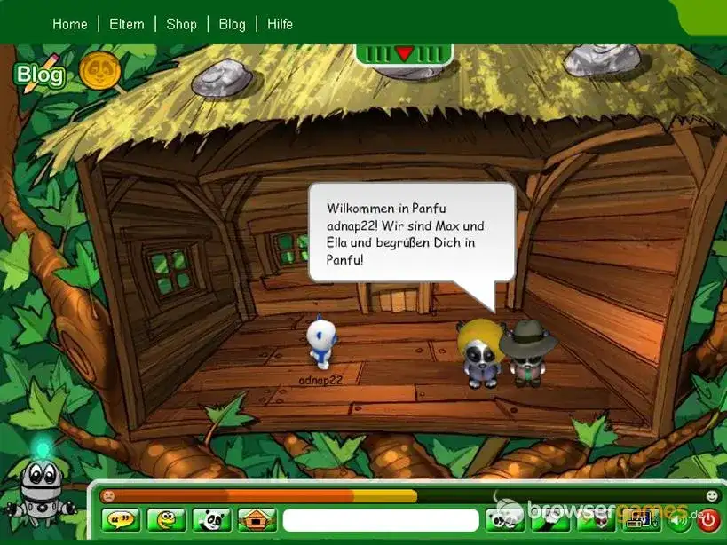
Testedich (Quiz Yourself)
I think every generation has their own version of the "fun personality quizzes you can make yourself" website. For me, it was testedich ("quizyourself").
I now use uQuiz to scratch that personality quiz itch. Check out my quizzes here!
Testedich still exists, though it looks much different now. (There is even an English version apparently.) Thankfully, the Wayback Machine has (somewhat) preserved how it looked back then:
{kind=link}
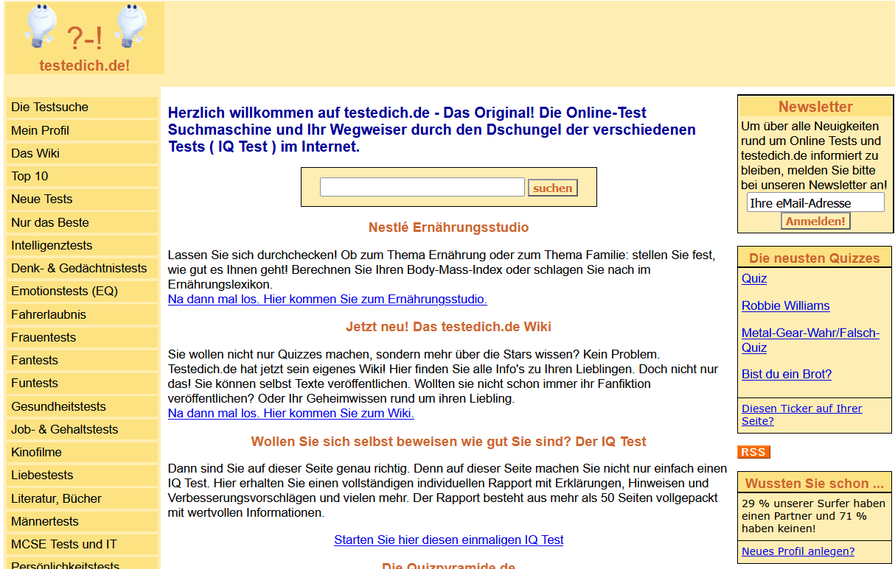
Misc.
{kind=link}
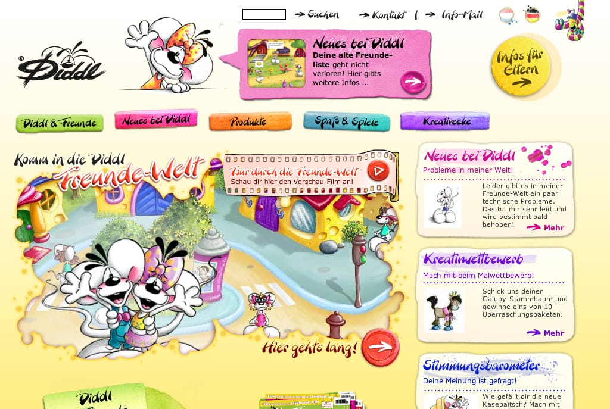
Diddl Freundewelt (Diddl World of Friends)
I don't remember this one much, except that it was possible to collect digital "stamps" (basically stickers), and I really liked doing that.
It doesn't exist anymore.
{kind=link}
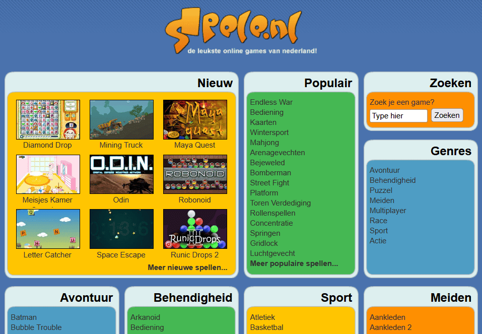
Spele.nl
My preferred page to play flash games, besides GirlsGoGames and (later) spielen.com.
This was technically a Dutch page, but since Dutch is kind of easy to understand for German speakers, I could use it.
{kind=link}
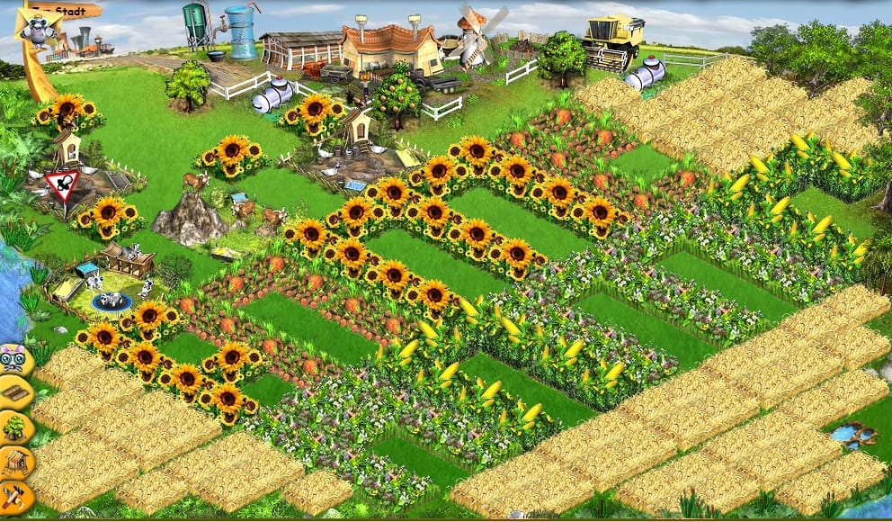
Farmerama
Before shitty mobile games riddled with ads there was Farmerama! This was my farming game of choice. I didn't play it a ton, but in some phases I checked in daily. It was actually really fun, and the art style is so nostalgic now.
{kind=link}
Geschaut.com
This was a website for posting and browsing phrases, jokes and quotes, such as those an 11-year-old would put in their instagram bio or a 45-year-old mom would post on Facebook.
It doesn't exist anymore, but here is something similar.
Middle School
Blingee
Blingee was a great site to make sparkly gifs such as this wonderful one of Nick Jonas I actually made when I was around 11-ish. It was honestly a really great website and I enjoyed it a lot, especially the competitions and the profile badges you would get for winning them.
Blingee has recently stopped existing (though the website says that they are "hard at work transforming Blingee into something new"), but a similar site, PicMix, still exists if you want to make some gifs! You can see my PicMix on this page.
{kind=link}
GoSupermodel
GoSupermodel was by far my favorite online game when I was in middle school. It was the first time I spent real money on something like that too: 40 bucks, which - for a child - was a huuuge amount! I don't even know why I enjoyed GSM so much because as a kid I was really not into fashion/beauty and stuff like that at all. I remember my favorite mini game being Backstage Rush. I also used the forum quite a lot: I remember playing a forum game called "Mörderzug" (murder train), which - if I remember correctly - was like a forum version of a "whodunit" game with voting (a bit like Among Us).
At some point, when I was already not playing that much anymore, the German site was taken down, but the English site remains to this day. I recently made a new account for the nostalgia, and you can see my model in the screenshot. If you have an account send me a friend request (mention where you know me from)! I probably won't play a lot but I might check in every once in a while.
{kind=link}
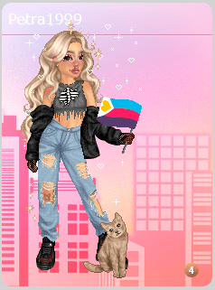
Howrse
Yeah, I was a little bit of a horse girl. But Howrse really was (and is) a cool online game. It has an unexpected depth, and I really liked the idea of collecting horses, including special ones (like unicorns).
My username back then was ~unicorn~, but unfortunately my account was deleted at some point due to inactivity. I lost all my unicorns! :( Well, I have a new account now for when I want to feel the nostalgia.
By far the best thing about Howrse was the "golden apple" item, which let you customize the appearance of a horse. The choices are all so beautiful, and I wanted to make one myself so badly that I actually learned how to draw digitally (a bit... I didn't get very far. I was like 12.) A small part of me still wants to make one...
➜ Howrse
{kind=link}
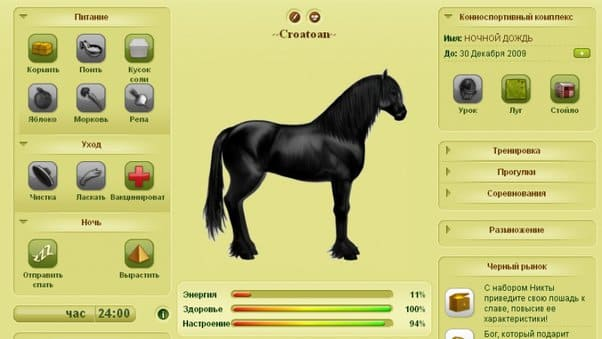
Dragon Cave
Dragon Cave is a collectible site that I joined in 2012 and i still play it somewhat regularly (I have a phase every few months). And yeah, I kinda want to brag with my profile.
Dragon Cave is fun and has a very active forum, so if you're into this kind of thing (dragons, pixel art, collecting digital pets, forums) you should definitely check it out!
{kind=link}
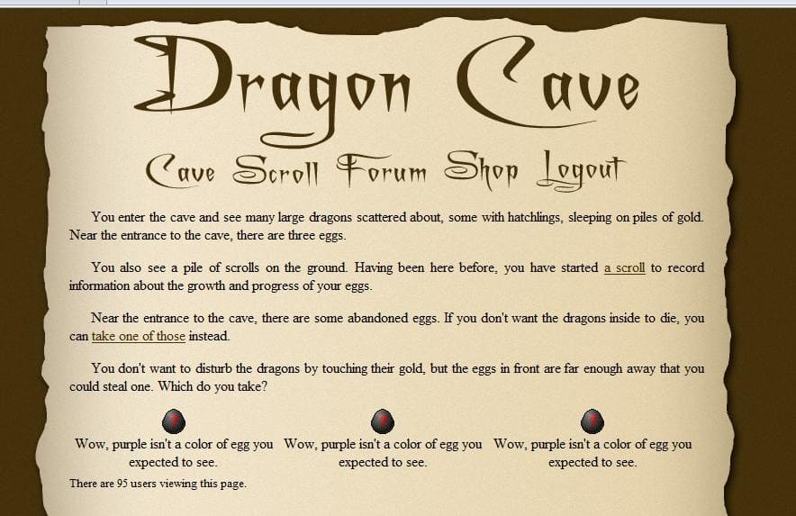
WittyProfiles
WittyProfiles is a website where you could post quotes, jokes, etc. formatted with HTML and CSS. I joined in 2012. Back then, it was mostly used to make and share profile layouts for any website that allowed HTML (such as goSupermodel and Howrse). It was my very first contact with HTML and CSS, and who knows - if I had never found it maybe I would not have become a web developer and have a website today.
WittyProfiles is still up, but it's a total ghost town. I think we should revive it.
{kind=link}
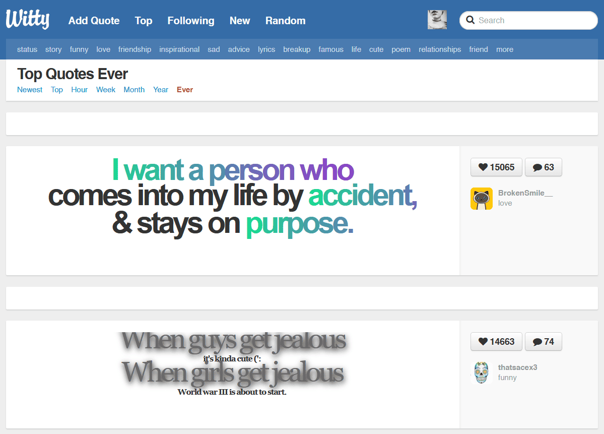
Misc.
{kind=link}
{kind=link}
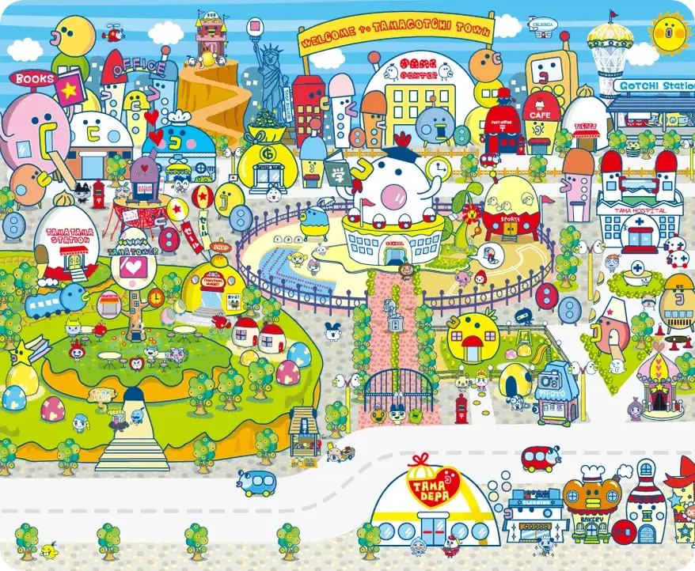
Tamagotchi Town
A game where you could play with your actual tamagotchi in a digital world. It was discontinued in 2013.
My Early Teens
Tumblr
Ah, tumblr. My first contact with it was when I was in my Glee phase and downloading Klaine gifs to my computer. (Yes, that's how I used to collect images. Unthinkable now.) I found this blog and it was a treasure trove of gifs. At the time I didn't know what tumblr was.
Soon after, when I joined the Smosh fandom and started highschool, I created a tumblr account. I was very active in the Smosh fandom back then. (My username was imagine-ianthony. If you knew me, no you didn't.) You can see a screenshot of my blog in 2015 on the right.
{kind=link}
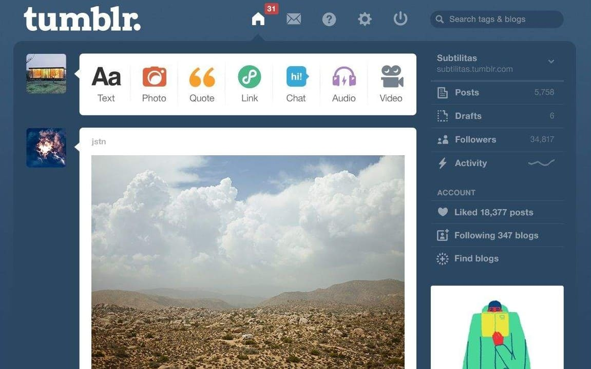
I also used to make tumblr themes, of course. (They're one of the main reasons I got into coding!) But all the changes to tumblr's code, and the fact that almost nobody visits blog pages anymore because most people just use the app, were the reason I ultimately stopped in 2019 or so.
Of course tumblr still exists, and I do still use it, but not nearly as much as I used to.
{kind=link}
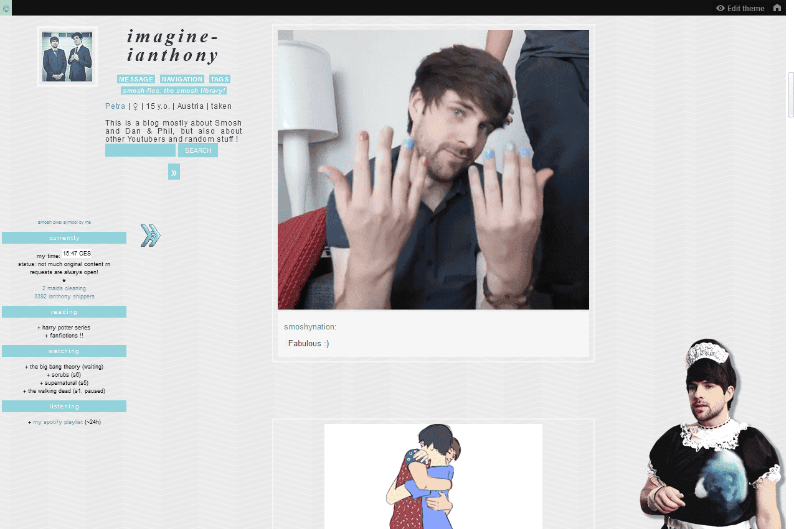
8Tracks
8Tracks was what some people over on Tumblr used to make playlists. Before I used it, my music taste could have been described with one single word: Glee. But this is when I finally listened to some other songs. I soon switched over to Spotify, but I still remember the time fondly. It was also really special that you could give the playlists covers, because back then that was not possible on Spotify (somehow).
8Tracks unfortunately shut down in 2019.
{kind=link}
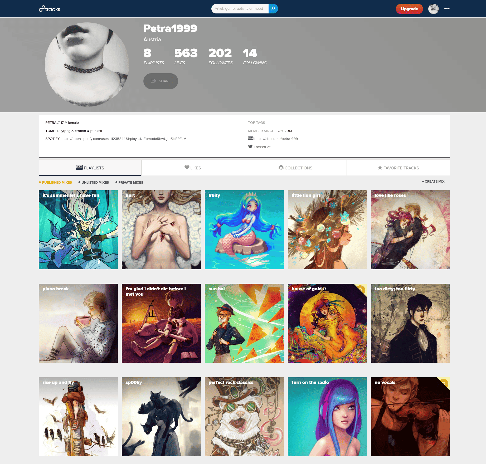
Polyvore
Polyvore was the site for creating outfits that you don't actually have the money to buy. I liked it a lot, but mostly did 'sets' (as they were called) for the aesthetic or related to fandoms, instead of actually focusing on the fashion. You can see one set I made (based on the band Twenty One Pilots) here.
Polyvore in its original form unfortunately stopped existing in 2018 with little warning (it's just similar to Lookbook now, with no way to be creative). Thankfully similar sites, such as URStyle, have popped up since.
{kind=link}
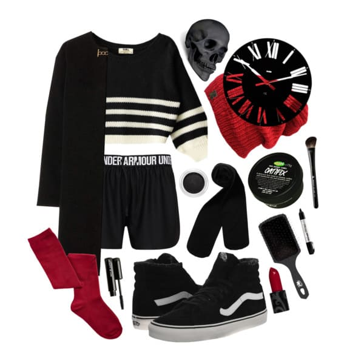
We♡It (We Heart It)
WeHeartIt was like Pinterest for 12-year-old girls in the early 2010s. It was heaven.
It shut down in 2023 (yes, I still used it at that point), which finally led me to actually using my Pinterest account. I still miss it, though.
{kind=link}
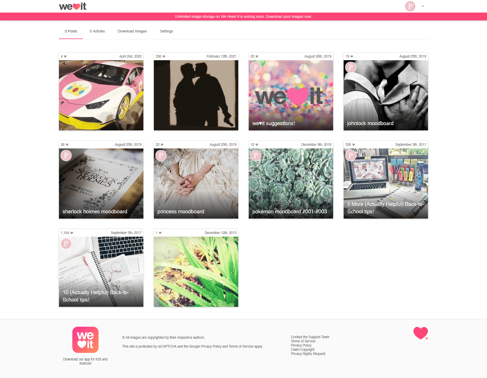
Misc.
{kind=link}
{kind=link}
Wattpad
When I started writing fanfiction in English (~2012) I of course used Wattpad. I would link to the Smosh fanfiction I wrote back then, but I do not want to humiliate myself.
Wattpad still exists of coures, but I switched to AO3 a long time ago, and am much happier there. I do kind of miss making book covers for my fanfics though.